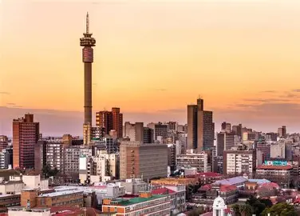

Why Johannesburg?
The City of Gold
Johannesburg is located in Gauteng Province, South Africa, on the Highveld plateau, straddling the Witwatersrand, a gold-rich ridge. The area was originally inhabited by hunter-gatherers and later by Sotho–Tswana communities, who farmed and mined iron in the region long before European arrival. By the 13th century, stone-walled settlements and iron-smelting furnaces, such as those at Melville Koppies, indicate early exploitation of mineral resources.
The modern city of Johannesburg emerged after gold was discovered on the Witwatersrand in 1886. President Paul Kruger declared the area open for public gold diggings on September 20, 1886, leading to a rapid influx of prospectors and settlers. Initially a small village managed by a Health Committee, Johannesburg became a municipality in 1898 and was declared a city in 1928, eventually growing into South Africa’s largest urban center.
Theme Parks
My favorite theme parks in Jozi

Happy Island Theme Park
Happy Island, now known as Mzansi Theme Park, is a premier water park located in Muldersdrift, Krugersdorp, South Africa. It offers a variety of thrilling slides, family-friendly rides, and a swimming pool, making it a perfect destination for both locals and tourists.
Address:
106 Lake View Drive Muldersdrift 2000
What I like about it
The park features a range of attractions suitable for all ages, including the famous Tsunami Wave pools, High Speed Slides, Amazon Splash Pools, Pirate Boat, Trumpet & Behemoth Bowl, Rainbow Slides, and more. Families can enjoy the tranquil pools and meandering rivers, while thrill-seekers can take on the exhilarating rides. Mzansi Theme Park is a must-visit for those seeking an unforgettable water adventure in South Africa.

Wild Waters Theme Park
A family-oriented water park featuring thrilling slides like the Kamikaze and Twister, a lazy river, and kiddie pools. Picnic areas and braai facilities make it suitable for group outings.
Address:
6 Margaret Ave Boksburg 1459
What I like about it
Wild Waters is home to some of the most exciting water slides in South Africa. From heart pounding high-speed slides to more gentle and relaxing rides, we have something for everyone.

Gold Reef City
Gold Reef City is an amusement park in Johannesburg, South Africa. Located on an old gold mine which closed in 1971, the park is themed around the gold rush that started in 1886 on the Witwatersrand, and the buildings in the park are designed to mimic this period. There is a museum dedicated to gold mining on the grounds where it is possible to see a gold-containing ore vein and see how gold is poured into barrels.
Address:
Cnr Northern Parkway and Data Crescent, Ormonde, Johannesburg, 2159
What I like about it
The Jozi Express, like the Anaconda, is a high-speed roller coaster. It’s the creation of Zierer, a German amusement park ride manufacturer. The ride will get a little faster, but not as crazy as the Anaconda ride because there are no loops and twists. This ride has its share of turns and drops, but it is a little easier to hang on than the other rides in the park. But brace yourself, because the ride ends abruptly.